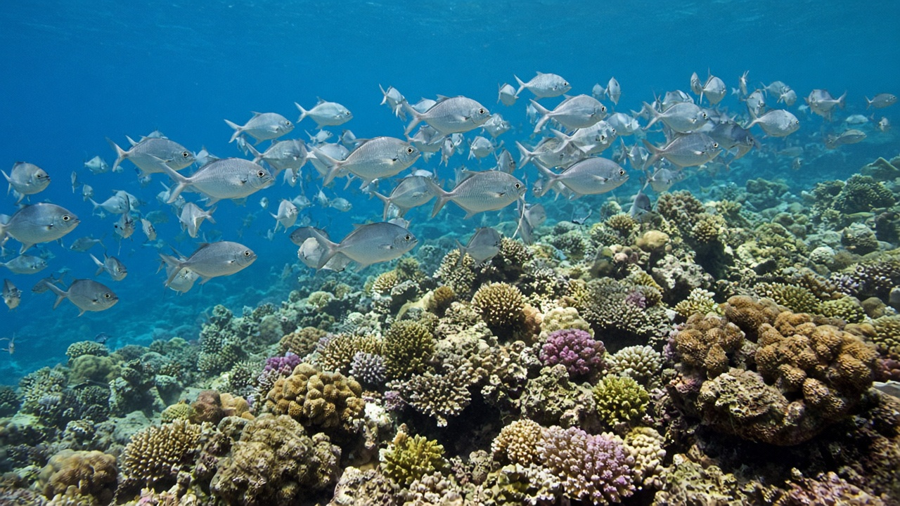
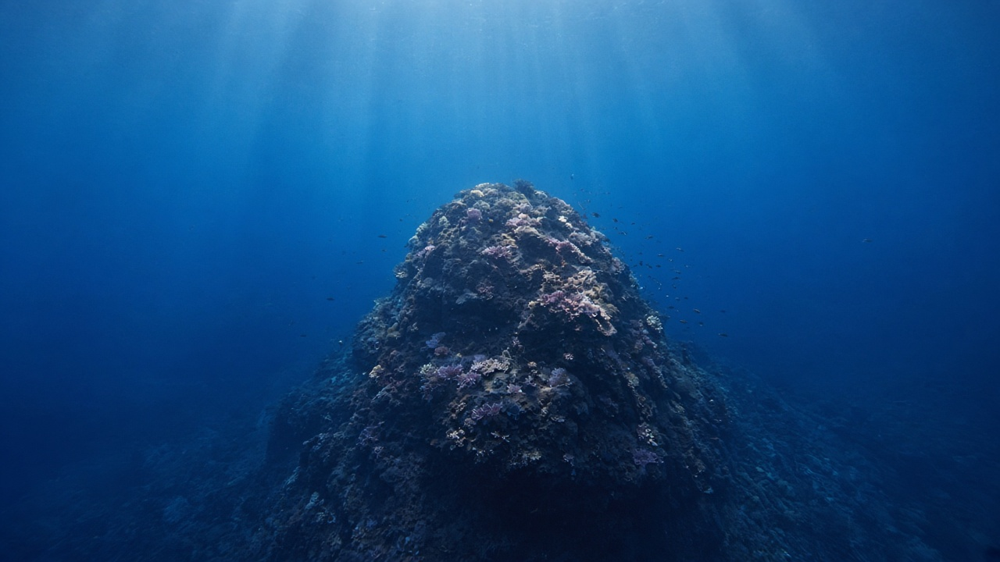
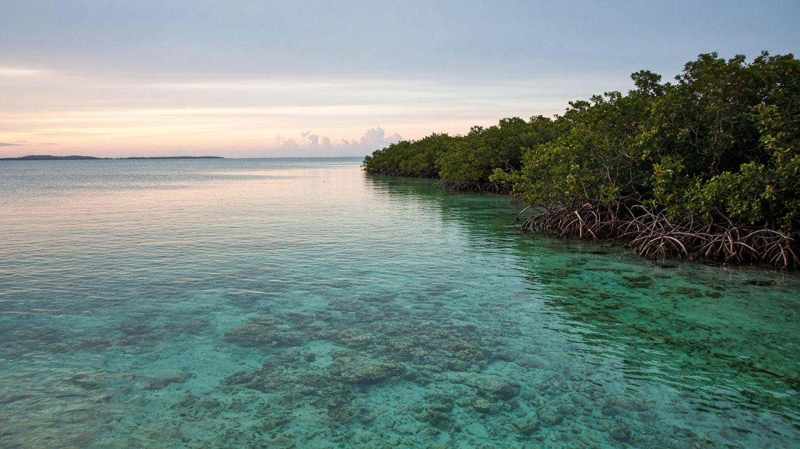

Marine Protected Areas and Ocean Sanctuaries
Published on August 20, 2026

Marine protected areas are mapped patches of ocean where fishing, mining, anchoring, or other uses are limited or forbidden to let habitats and populations recover. Fully protected no-take reserves typically grow larger, older fish that spill larvae and adults into neighbouring grounds; partially protected zones may still allow traditional fishing with gear rules. Ocean sanctuaries and large offshore parks aim to protect migratory corridors, seamounts, and breeding aggregations that sit far from shore. Paper parks—lines on a chart without patrols or community consent—fail, so design must include enforcement, fair alternative livelihoods, and science-based boundaries that match currents and life cycles rather than political convenience.
Networks matter more than isolated jewels. Larvae drift with tides and monsoon currents, so a reserve that is too small or poorly placed may never receive recruits. The global thirty-by-thirty target seeks to protect thirty percent of ocean by 2030, including representative habitats from mangroves to the high seas. High-seas protected areas now have a legal pathway under the agreement on biodiversity beyond national jurisdiction, but they still need vessels, satellites, and port states to make rules real. In the Bay of Bengal, sanctuary design must also account for densely used nearshore waters and the rights of small-scale fishers who cannot simply steam farther out.
Evaluating sanctuaries requires more than counting square kilometres. Biomass inside versus outside, habitat condition, equity of access, and compliance rates tell whether protection is working. Seasonal closures around turtle nesting or fish spawning can complement year-round no-take cores. Students far inland should still understand this tool: it is the ocean analogue of national parks, but water moves and fish swim, so connectivity and international cooperation are not optional extras. Well-sited, well-enforced marine protected areas are among the few measures that simultaneously rebuild fisheries, store carbon in intact habitats, and give climate-stressed species a refuge.

समुद्री संरक्षित क्षेत्र महासागरका नक्सांकित टुक्रा हुन् जहाँ वासस्थान र जनसंख्या फर्कन माछा मार्ने, खनन, लंगर वा अन्य प्रयोग सीमित वा निषेध गरिन्छ। पूर्ण संरक्षित माछा-मार्न-निषेध आरक्षमा प्रायः ठूला, पाका माछा बढ्छन् जो छिमेकी मैदानमा लार्भा र वयस्क पोख्छन्; आंशिक संरक्षित क्षेत्रले जाल नियमसहित परम्परागत माछा मार्ने अझै दिन सक्छन्। महासागर अभयारण्य र ठूला अपतटीय निकुञ्जले तटबाट टाढा बसाइँ करिडोर, समुद्री पर्वत र प्रजनन जमघट जोगाउने लक्ष्य राख्छन्। कागज निकुञ्ज—गस्ती वा सामुदायिक सहमति बिना चार्टका रेखा—असफल हुन्छन्, त्यसैले रूपरेखामा कार्यान्वयन, न्यायोचित वैकल्पिक जीविका र राजनीतिक सुविधा होइन धारा तथा जीवन चक्र मिल्ने विज्ञान-आधारित सीमा समावेश हुनुपर्छ।
सञ्जाल एक्ला रत्नभन्दा महत्त्वपूर्ण छन्। लार्भा ज्वारभाटा र मनसुन धारासँग बग्छन्, त्यसैले अति सानो वा खराब राखिएको आरक्षले कहिल्यै भर्ती नपाउन सक्छ। विश्वव्यापी लक्ष्यले सन् २०३० सम्म महासागरको तीस प्रतिशत जोगाउने खोज्छ, म्यानग्रोभदेखि उच्च समुद्रसम्म प्रतिनिधि वासस्थानसहित। उच्च समुद्र संरक्षित क्षेत्रलाई अब राष्ट्रिय क्षेत्राधिकारबाहिर जैविक विविधता सम्झौताअन्तर्गत कानुनी बाटो छ, तर नियम वास्तविक बनाउन अझै जहाज, उपग्रह र बन्दरगाह राज्य चाहिन्छन्। बंगालको खाडीमा अभयारण्य रूपरेखाले बाक्लो प्रयोग हुने नजिकैका पानी र टाढा जान नसक्ने साना माछा मार्नेका अधिकार पनि हिसाब गर्नुपर्छ।
अभयारण्य मूल्यांकन वर्ग किलोमिटर गन्नुमात्र होइन। भित्र र बाहिर जैवभार, वासस्थान अवस्था, पहुँचको समता र पालना दरले संरक्षण काम गरिरहेको छ कि छैन बताउँछन्। कछुवा गुँड वा माछा प्रजनन वरपर मौसमी बन्दले वर्षभरि माछा-मार्न-निषेध केन्द्र पूरक गर्न सक्छन्। धेरै भित्रका विद्यार्थीले पनि यो औजार बुझ्नुपर्छ: यो राष्ट्रिय निकुञ्जको महासागर अनुरूप हो, तर पानी सर्छ र माछा पौडिन्छन्, त्यसैले जडान र अन्तर्राष्ट्रिय सहकार्य वैकल्पिक अतिरिक्त होइनन्। राम्रो स्थान र राम्रो कार्यान्वयन भएका समुद्री संरक्षित क्षेत्र मत्स्य पुनर्निर्माण, अक्षत वासस्थानमा कार्बन भण्डारण र जलवायु-तनावित प्रजातिलाई आश्रय दिने थोरै उपायमध्ये हुन्।

समुद्री संरक्षित क्षेत्र महासागर के नक्शा किए टुकड़े हैं जहाँ आवास और जनसंख्या लौटने को मछली पकड़ना, खनन, लंगर या अन्य उपयोग सीमित या निषिद्ध रहते हैं। पूर्ण संरक्षित पकड़-निषिद्ध आरक्षों में प्रायः बड़ी, उम्रदराज़ मछलियाँ बढ़ती हैं जो पड़ोसी मैदानों में लार्वा और वयस्क उंडेलती हैं; आंशिक संरक्षित क्षेत्र जाल नियमों सहित पारंपरिक मछली पकड़ना अभी दे सकते हैं। महासागर अभयारण्य और बड़े अपतटीय उद्यान तट से दूर प्रवास गलियारे, समुद्री पर्वत और प्रजनन जमाव बचाने का लक्ष्य रखते हैं। कागज़ी उद्यान—गश्त या सामुदायिक सहमति बिना चार्ट की रेखाएँ—असफल होते हैं, इसलिए रूपरेखा में प्रवर्तन, न्यायपूर्ण वैकल्पिक आजीविका और राजनीतिक सुविधा नहीं धारा तथा जीवन चक्र से मेल खाती विज्ञान-आधारित सीमाएँ शामिल होनी चाहिए।
जाल अकेले रत्नों से अधिक महत्त्वपूर्ण हैं। लार्वा ज्वार और मानसून धाराओं के साथ बहते हैं, इसलिए बहुत छोटे या गलत रखे आरक्ष कभी भर्ती न पाएँ। वैश्विक लक्ष्य सन् २०३० तक महासागर का तीस प्रतिशत बचाने चाहता है, मैंग्रोव से उच्च समुद्र तक प्रतिनिधि आवासों सहित। उच्च समुद्र संरक्षित क्षेत्रों को अब राष्ट्रीय क्षेत्राधिकार से परे जैव विविधता समझौते के अंतर्गत क़ानूनी रास्ता है, पर नियम वास्तविक बनाने को अभी पोत, उपग्रह और बंदरगाह राज्य चाहिए। बंगाल की खाड़ी में अभयारण्य रूपरेखा को घने उपयोग वाले निकटवर्ती जल और दूर न जा सकने वाले छोटे मछुआरों के अधिकार भी हिसाब करने चाहिए।
अभयारण्य मूल्यांकन वर्ग किलोमीटर गिनना मात्र नहीं है। भीतर बनाम बाहर जैवभार, आवास दशा, पहुँच की समता और पालन दरें बताती हैं संरक्षण काम कर रहा है या नहीं। कछुआ घोंसला या मछली प्रजनन के आसपास मौसमी बंद वर्षभर पकड़-निषिद्ध केंद्रों की पूर्ति कर सकते हैं। दूर भीतरी छात्रों को भी यह औज़ार समझना चाहिए: यह राष्ट्रीय उद्यानों का महासागर अनुरूप है, पर जल सरकता है और मछली तैरती हैं, इसलिए संयोजन और अंतरराष्ट्रीय सहयोग वैकल्पिक अतिरिक्त नहीं। अच्छी जगह और अच्छे प्रवर्तन वाले समुद्री संरक्षित क्षेत्र मत्स्य पुनर्निर्माण, अक्षत आवासों में कार्बन संचय और जलवायु-तनावग्रस्त प्रजातियों को आश्रय देने वाले थोड़े उपायों में हैं।